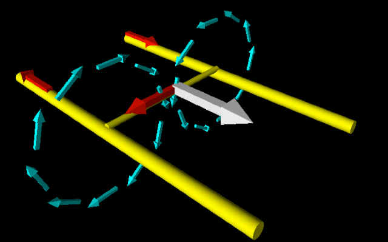
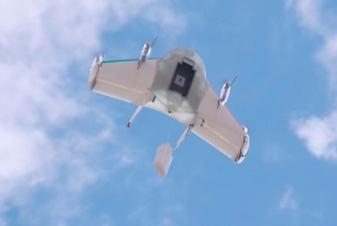
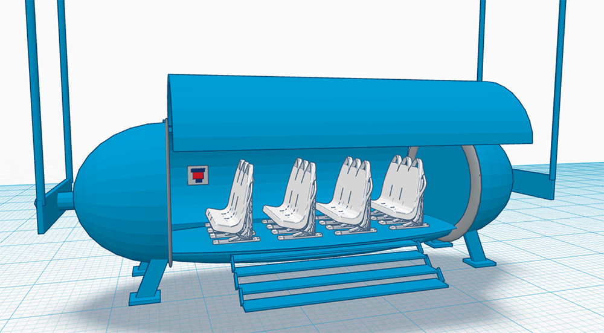

How It Works
The HyperWing starts in the tube where it is propelled by railguns every 70 miles. The HyperWing is then launched out of the tube. The HyperWing changes its shape, instead of being able to fit in the tube it converts into the HyperWing.
Stages
1. The HyperWing is accelerated toward the end of the tube by a railgun.
2. While on a sloped curve, the four propellers pivot sideways and lift the HyperWing over the top edge of the curve. Slower moving vehicles avoid flight by moving downward to the inside of the curve like on a racetrack.
3. Once airborne, the wing pivots from the fuselage and the gyrocopter rotor is extended upward from inside the wing.
4. The gyrocopter rotor acts as a glider wing, allowing the HyperWing to conserve energy.
5. Propellers turn upward when the capsule is lowered to the ground for deliveries.
HyperLoop
HyperLoop vehicles travel faster than a jet plane by eliminating friction. The pressure inside the tube is 1/10 the pressure of air at sea level on earth. From the front of the HyperLoop vehicles, an air compressor pushes air out of small holes on the bottom. The vehicle stays afloat and removes the air in front of the vehicle to make it travel without friction.
Railgun Propulsion
Railguns use a form of electromagnetic energy known as the Lorentz force. A current travels down one rail, across a metal bar at the bottom of the vehicle, and back along the opposite rail.

Source: Wired / More about How Railgun Propulsion Works
The science behind HyperWing and HyperLoop is mostly old technology, with some dating back to the 1940's and 50's. The main difference now is new materials, including light weight carbon fibers. A test track is being planned by Elon Musk for students to test HyperLoop vehicle designs. We explored a number of safety issues and proposed a series of solutions for improving upon existing technologies on our Vehicle Safety page.
"The Big Egg" is lowered on wires so passengers avoid the blast of wind from the propellers.

Google Project Wing 1.0 also uses a suspended egg to deliver packages.

"The Big Egg" carries 8 to 12 passengers
and retracts into the body of the HyperWing.
A gyroscope allows the passenger capsule to remain level.
Windowless seating area would use monitors for 360° views.
Hyperwing Lift
Most aircraft use wings with curved tops to create lift by reducing air pressure over the wing. The HyperWing has a flat wing surface, so it produces lift using three methods:
A. Holes in the upper surface of the wing create low pressure through suction. The same "Air Bearing" holes are used to float the vehicle in the tubes, like an inverted air hockey table.
B. A gyrocopter rotor provides lift without using an additional engine. If all power fails, the Rotor will continue to turn, bring the vehicle in for a safe landing.
C. Propellers on the wings rotate downward during takeoff and when the vehicle hovers.
How will HyperWing Impact your Community?